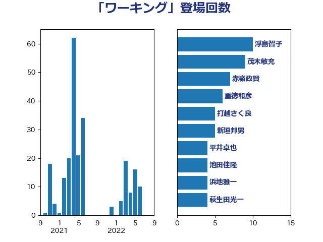

単語「ワーキング」

| 浮島智子 | 公明党 | 10 回 |
| 茂木敏充 | 自由民主党 | 9 回 |
| 赤嶺政賢 | 日本共産党 | 7 回 |
| 重徳和彦 | 立憲民主党 | 6 回 |
| 打越さく良 | 立憲民主党 | 5 回 |
| 新垣邦男 | 立憲民主党 | 5 回 |
| 平井卓也 | 自由民主党 | 4 回 |
| 池田佳隆 | 自由民主党 | 4 回 |
| 浜地雅一 | 公明党 | 4 回 |
| 萩生田光一 | 自由民主党 | 4 回 |
| 林芳正 | 自由民主党 | 3 回 |
| 熊谷裕人 | 立憲民主党 | 3 回 |
| 福島みずほ | 社会民主党 | 3 回 |
| 紙智子 | 日本共産党 | 3 回 |
| 野上浩太郎 | 自由民主党 | 3 回 |
| 井上哲士 | 日本共産党 | 2 回 |
| 伊藤孝恵 | 国民民主党 | 2 回 |
| 小沢雅仁 | 立憲民主党 | 2 回 |
| 岡本三成 | 公明党 | 2 回 |
| 岸真紀子 | 立憲民主党 | 2 回 |
| 早稲田ゆき | 立憲民主党 | 2 回 |
| 杉久武 | 公明党 | 2 回 |
| 池下卓 | 日本維新の会 | 2 回 |
| 田名部匡代 | 立憲民主党 | 2 回 |
| 田村憲久 | 自由民主党 | 2 回 |
| 田村貴昭 | 日本共産党 | 2 回 |
| 石川香織 | 立憲民主党 | 2 回 |
| 稲津久 | 公明党 | 2 回 |
| 舟山康江 | 国民民主党 | 2 回 |
| 赤羽一嘉 | 公明党 | 2 回 |
| 音喜多駿 | 日本維新の会 | 2 回 |
| 高木かおり | 日本維新の会 | 2 回 |
| 高良鉄美 | 無所属 | 2 回 |
| 麻生太郎 | 自由民主党 | 2 回 |
| こやり隆史 | 自由民主党 | 1 回 |
| 上野通子 | 自由民主党 | 1 回 |
| 中山展宏 | 自由民主党 | 1 回 |
| 丸川珠代 | 自由民主党 | 1 回 |
| 井上信治 | 自由民主党 | 1 回 |
| 伊波洋一 | 無所属 | 1 回 |
| 國重徹 | 公明党 | 1 回 |
| 坂本哲志 | 自由民主党 | 1 回 |
| 宮本徹 | 日本共産党 | 1 回 |
| 寺田学 | 立憲民主党 | 1 回 |
| 小宮山泰子 | 立憲民主党 | 1 回 |
| 山添拓 | 日本共産党 | 1 回 |
| 山田俊男 | 自由民主党 | 1 回 |
| 岡本あき子 | 立憲民主党 | 1 回 |
| 後藤茂之 | 自由民主党 | 1 回 |
| 斎藤嘉隆 | 立憲民主党 | 1 回 |
| 本村伸子 | 日本共産党 | 1 回 |
| 本田顕子 | 自由民主党 | 1 回 |
| 橋本岳 | 自由民主党 | 1 回 |
| 武部新 | 自由民主党 | 1 回 |
| 沢田良 | 日本維新の会 | 1 回 |
| 河野太郎 | 自由民主党 | 1 回 |
| 浜田聡 | NHK党 | 1 回 |
| 玉木雄一郎 | 国民民主党 | 1 回 |
| 田所嘉徳 | 自由民主党 | 1 回 |
| 磯崎仁彦 | 自由民主党 | 1 回 |
| 礒崎哲史 | 国民民主党 | 1 回 |
| 秋野公造 | 公明党 | 1 回 |
| 蓮舫 | 立憲民主党 | 1 回 |
| 藤木眞也 | 自由民主党 | 1 回 |
| 足立康史 | 日本維新の会 | 1 回 |
| 道下大樹 | 立憲民主党 | 1 回 |
| 里見隆治 | 公明党 | 1 回 |
| 野間健 | 立憲民主党 | 1 回 |
| 鈴木憲和 | 自由民主党 | 1 回 |
| 馬場伸幸 | 日本維新の会 | 1 回 |
| 高橋光男 | 公明党 | 1 回 |